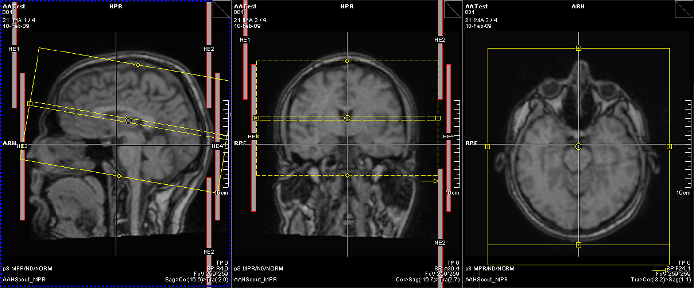

Preprocessing T1 Weighted Images
After you complete this section, you should be able to:
- Convert a DICOM directory into a NIfTI image
- Check that your MR image contains no patient information
- Orientate MR images into standard orientation
- Align images along the horizontal anterior commissure and posterior commissure plane, and why
- Know what a bias field is and how to fix it
- Know when and how to resample the size of voxels in an MR image
Note that everything in “<>” is to be replaced. For example, <fileName> –> iLovePeanuts.txt
Convert DICOM to NIfTI
Most imaging programs and pipelines do not actually use DICOMs, but some other “standardized” image format. Similar to how pictures can be in various formats like jpeg, tiff, png, etc. MR images can come in different formats as well. The most common format is the NIfTI format (.nii) or the zipped NIfTI format (.nii.gz). Most programs will be able to use the NIfTI and the zipped NIfTI interchangeably, but there are still a few programs that prefer one over the other. For the first part of our pipeline, we will use the NIfTI format, but eventually we will move to using the zipped NIfTI format exclusively for the rest of the pipeline.
First let’s create a T1 directory within our participant directory. Often times you will be working with multiple scan modalities and you will want to put those in separate directories (e.g., DTI, fMRI, T2w, etc.).
subjDir=</path/to/subject/directory>
mkdir ${subjDir}/t1Time to convert the DICOMs to NIfTI format. The simplest way to run the code is:
dcm2nii \
-o ${subjDir}/t1 \
${subjDir}/DICOMs/*Anonymize
However, there are many other options you probably want to take into consideration. First of all, it is never a bad habit to get into to automatically anonymize the data. DICOMs will contain patient name, date of birth, weight, location of scan, date and time of scan, etc.

The option -a y will anonymize participant information located in the DICOM files.
Crop and Reorient
There are three critical issues with brain orientation: (1) moving the brain to “standard orientation”, (2) field of view size, and (3) alignment. The “standard orientation” is based off of the MNI template. The x coordinates go from negative to positive from left to right. In other words, the left side of the brain is denoted by negative x coordinates and the right side of the brain is denoted by positive x coordinates. The y coordinates increase from posterior to anterior. The z coordinates increase from inferior to superior. However, sometimes scans are acquired sagittally and thus the “standard orientation” is off. In other words, sagittal will be labeled as “coronal” and the rest of the brain orientation is thrown off. In the example below, the coronal view is rotated. Not all imaging programs will correctly read this rotation (e.g., ANALYZE), therefore it is important to make sure the brain is put into “standard orientation”.

Second, each scan sequence has a set field of view (FOV) box. If studying children particularly, sometimes that FOV box is barely enough to acquire the brain, cutting parts of the skull out of the image. Other times the FOV box is so small that you are getting neck and spine in the image. When you begin any imaging analysis you want to make sure all the brains are orientated correctly and that you remove as much of the excess space and non-brain aspects of the image.

The dcm2nii program will reorient and crop the images using the -x option. The following code below will anonymize the image -a, just provide a NIfTI file and NOT a zipped file -g, and crop / reorient the image -x.
dcm2nii \
-a y \
-g n \
-x y \
-o ${subjDir}/t1 \
${subjDir}/DICOMs/*Rename
Before we get to the issue of alignment, look closely, the file names that dcm2nii give look like Linux attacked, 19890302_162952MPRAGEs0003a001.nii.gz. The output from the dcm2nii program results in file names that are uniquely different across participants. For analyses though, we want all the files named exactly the same from participant to participant. In this case, we want all the files named t1.nii.
In addition to renaming the file, we want to use just the cropped and reorientated file (co). We want to delete the reorientation only (o) and original file (no co or o prefix).
cd ${subjDir}/t1
mv co*.nii t1.nii
rm o*.nii | rm 2*.niiAC-PC Alignment
Participants are more times than not, not perfectly positioned in the scanner. In fact, misalignment is a common clinical occurrence. Image quality is compromised when the brain is not aligned in the scanner and there’s a lack of standardization across participants and within participants if you are scanning over multiple sessions. Optimally, you want a way to standardize image acquisition and overall alignment. Because it is very difficult to perfectly position people, a short sequence will be run to get a midsagittal image. From there, the field of view box can be adjusted so that the anterior commissure and posterior commissure are on the same horizontal plane.
Here’s an image with the scanner FOV box (yellow). As you can see the box is adjusted so the AC and PC are on the same horizontal plane. You can also see in this image, how you can have a brain bigger than the FOV box (see issue above about cropping and reorientation). You cannot make the FOV box bigger, because that would change the number of slices in your scan sequence.

Besides AC-PC alignment, you also don’t want the brain tilted left or right. The interhemispheric fissure (AKA medial longitudinal fissure) should be straight! And finally, the alignment of the origin is also critical. In the native brain, you want some standardization of where the location of (0, 0, 0) is on the x-, y-, and z-axis. Typically, the origin is located at the anterior commissure or half way between the anterior commissure and posterior commissure along the horizontal plane. There’s a program that can automatically fix all of these issues. However, the program only runs on Linux computers:
acpcdetect \
-M \
-o ${subjDir}/t1/acpc.nii \
-i ${subjDir}/t1/t1.nii
Correct Bias Field
Images often exhibit image intensity non-uniformities that are the result of magnetic field variations. These artifacts, often described as shading or bias, can be produced by imperfections in the field coils. These variations are often seen as a signal gain change. This can result in white matter measurements in one part of the image with the same intensity value as grey matter measurements elsewhere; an ideal T1-weighted image would display brighter white matter throughout the brain image.

Image processing algorithms such as tissue segmentation use the pixel gray level values. If there is a bias field, the gray level values of the pixels will cause the algorithms to produce unsatisfactory results. A pre-processing step is needed to correct for the bias field signal before submitting corrupted MRI images to such algorithms. Note that at this point, we will output our file as .nii.gz. From this point on, we will use .nii.gz files. Only the acpcdetect program requires NIfTI only files.
N4BiasFieldCorrection \
-d 3 \
-i ${subjDir}/t1/acpc.nii \
-o [${subjDir}/t1/n4.nii.gz,${subjDir}/t1/biasfield.nii.gz] \
-s 4 \
-b [200] \
-c [50x50x50x50,0.000001]Resample to 1 mm Isotropic
Sometimes you will need to resample your images. For instance, if the study involves MR images acquired at different locations and they are not all using the same sequence, (2) the study is longitudinal and there’s been a scanner or sequence upgrade between time points, or (3) the study involves DTI analyses, fMRI analyses, T2 weighted analyses, etc., then you will most likely have to resample your images.
If you want to register a DTI image to your T1 image, you will definitely have to resample your T1 image. Most likely your T1 image will have about 1mm voxels, but your diffusion weighted image will be 2mm voxels. Therefore, you will have to resample your T1 image to have 2mm voxels.
$ c3d \
<inputImage>.nii.gz \
-resample-mm 1x1x1mm \
-o <outputImage>.nii.gzReference Manuals
- dcm2nii - http://www.mccauslandcenter.sc.edu/mricro/mricron/dcm2nii.html
- Convert3D - http://www.itksnap.org/pmwiki/pmwiki.php?n=Convert3D.Documentation
- ANTs - https://github.com/stnava/ANTsDoc/raw/master/ants2.pdf
- acpcdetect - https://www.nitrc.org/docman/view.php/90/917/acpcdetect.pdf
Further Readings
- Bias Correction - http://dx.doi.org/10.1109/TMI.2010.2046908
- Automatic Detection of AC/PC - http://dx.doi.org/10.1016/j.neuroimage.2009.02.030
Additional Classroom Materials
blog comments powered by Disqus